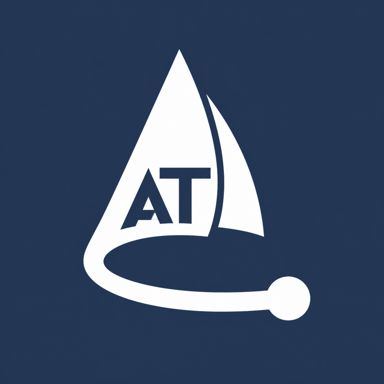
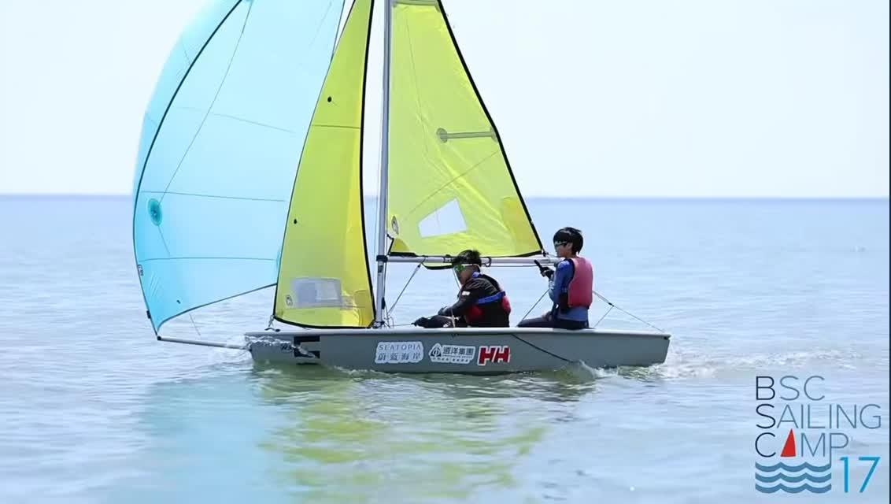
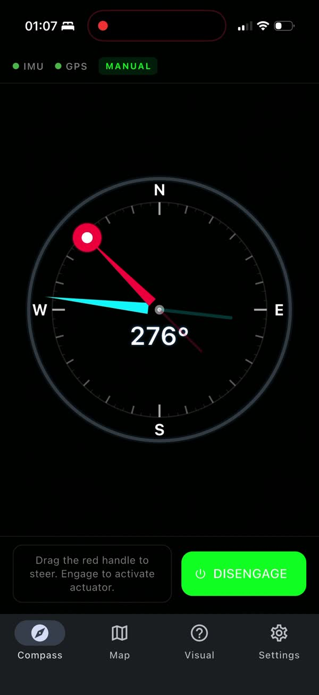
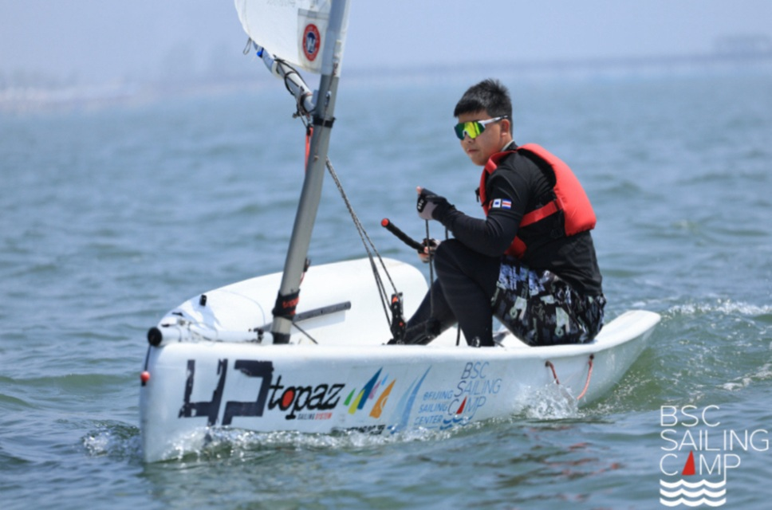
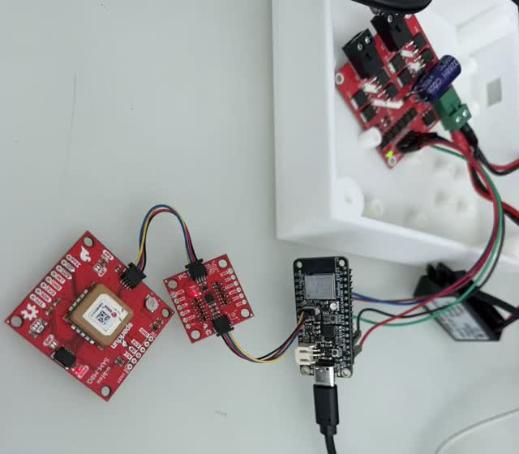

CURRENT FOCUS
From the bench to the boat.
Evaluate heading error, response, actuator activity, and power use in controlled trials.

Auto Tiller Watch the prototypeA project born on the water
Meet Auto Tiller. An app-connected steering prototype, designed to give solo sailors more freedom to focus on the sails.
A real sailing problem.
A hands-on engineering experiment.


THE ACTUAL APP ↗
FIELD NOTES / 001Two hands. One sailor.
When I was learning to sail, I often didn’t have a teammate. Keeping one hand on the tiller while adjusting a sail could turn a simple task into a scramble.
Practice helped. Then came the jib and spinnaker, and the juggling started all over again. Auto Tiller grew from a question I kept coming back to:
“What if something could help hold my heading while I worked the sails?”
Less explaining. More exploring.
Choose a heading. Add a little disturbance. See how steering assistance is intended to bring the boat back toward your course.
Watch the boat ease back toward the dotted course line. Try switching assistance off to compare.
Illustration only. This simplified model does not predict real-world performance or connect to a boat.
Responding strongly to every tiny heading error can cause repeated corrections past the target. A useful controller must balance responsiveness with damping, sensor noise, and the actuator’s physical limits.
This two-setting web model illustrates that tradeoff. It is not the actual ESP32 firmware or a measured PID result. Real tuning needs data from the hardware and, eventually, controlled on-water trials.
The goal is a little less workload.
The sailor stays in charge.
A heading on your phone becomes a steering correction through sensors, a controller, and a linear actuator.

Start by understanding direction.
A 9-axis inertial measurement unit (IMU) provides data used to estimate heading. GPS supplies position information. The ESP32 brings these inputs into the control system.
The Flutter app provides heading selection, system status, and a control to disengage assistance.
The PID controller uses heading error to calculate a correction. Tuning aims to limit unnecessary back-and-forth movement.
A motor driver powers the 12 V linear actuator, turning an electronic command into a physical push or pull.
Follow one correction
The sailor selects a heading in the phone app. A Bluetooth connection carries that request to the ESP32. The phone is the interface; the controller handles the steering loop.
The story, the app, and the hardware in one short film. Recorded bench demonstrations show the current prototype.
The interesting part is in the details.
A prototype is a series of decisions, experiments, and things that don’t work the first time. Here are some of the questions behind Auto Tiller.
Open the app sourceThe mobile interface uses Dart and Flutter. It lets the sailor choose a heading, see status information, and disengage assistance. Bluetooth connects it with the ESP32 controller.
The ESP32 handles sensor inputs and the control loop. The IMU supports heading estimation, GPS provides position information, and the motor driver operates the actuator. Keeping those roles clear helps make problems easier to trace.
Explore the firmware ↗A compass wraps around at north. Going from 350° to 10° is a 20° turn, rather than a 340° turn in the opposite direction. A steering controller needs to compare angles across that boundary.
PID tuning adds another challenge: reacting too aggressively can lead to overshoot and repeated left-right adjustments. The aim is useful correction without chasing every small fluctuation.
Try the tuning comparison ↑Early on, the linear actuator wouldn’t run. Several program changes failed to solve it. Testing eventually traced the issue to a faulty power converter that wasn’t supplying enough power for the actuator.
The actuator and low-voltage electronics have different supply requirements. That experience made the power system part of the debugging process, alongside software, wiring, and sensor readings.
Takeaway: when software controls hardware, a silent motor doesn’t automatically mean a software bug.
Bench demonstrations can show communication, sensor changes, and actuator movement. They cannot establish how well a boat will hold a course in wind and waves.
These are planned evaluation measures. Controlled on-water trials and measured results are still ahead.
A practical sailing installation needs more than a box around the boards. Mounting, cable strain, moisture, access to power, and the actuator’s connection to the tiller all affect the design.
The enclosure and bench layout shown here are development hardware. Environmental protection, installation, and a clear way for the sailor to take control need evaluation before use on the water.
Built with curiosity. Tested step by step.
Auto Tiller is an experimental prototype. Heading control still needs controlled on-water testing. The next chapter starts with measuring how it performs.
Explore the app repositoryEvaluate heading error, response, actuator activity, and power use in controlled trials.
Explore quick heading adjustments and clearer status feedback when a sailor’s hands are busy.
Investigate wind sensing and simple sail-trim suggestions to support a sailor’s own judgment.
A few good questions.
What the project is, what it is exploring, and what still needs to happen.
Auto Tiller is currently an experimental prototype, rather than a ready-to-use marine product. The source repositories are available to explore, but boat-specific installation, validation, and controlled on-water testing are still needed.
The project’s core focus is holding a selected heading. GPS position displays and the app’s destination-related interface do not establish that autonomous navigation has been validated. Route following and obstacle avoidance are outside the demonstrated scope.
No. The actuator is intended to assist the tiller. The sailor still handles the sails and makes sailing decisions. Wind sensing and sail-trim suggestions are future ideas to investigate.
The boat and chart on this page are a simplified, browser-only illustration. They help explain heading correction and tuning tradeoffs. They are not connected to hardware and do not represent recorded or predicted on-water performance.
Email Ryan at ryandeng24@gmail.com. Feedback from sailors, builders, and people interested in control systems is welcome.
AN OPEN CONVERSATION
A question about the prototype, a sailing experience, or an idea worth trying — I’d like to hear it.
Good conversations are a useful place to start.
Opens your email app. Nothing is sent automatically.
For the days you sail your own way.